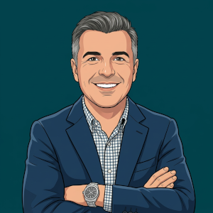

Ignacio Navarro Valdecantos
Full Stack Developer & Viajero
¡Hola! Soy Ignacio Navarro, un apasionado del desarrollo web y la tecnología. Desde pequeño, siempre me ha fascinado cómo funcionan las cosas detrás de la pantalla y eso que cuando era pequeño, la tecnología punta era un Spectrum 48K y código para trastear requería copiar más de 1000 líneas de una revista en BASIC. Viví como eso evoluciomó a un Commodore 64, cómo apareció un IBM con monitor monocromo, los primeros Apple, Internet, que permitía de repente "hablar" con alguien remoto a través de una pantalla. Más tarde la mensajería instantánea, después el primer móvil, luego uno que se abre, otro con teclado, uno con pantalla ... ¡color! ...Internet en el móvil. Y de páginas web de texto a páginas totalmente interactivas, hasta la actualidad con IA.
Aparte de la tencología me encanta el deporte, la cocina y especialmente viajar. Me encanta conocer distintas culturas y vivir experiencias que se salen por completo de nuestr rutina diaria. Tengo un cariño especial al Sureste asiático donde la naturaleza sobrecoje, la comida cambia radicalmente, y la forma de ser de las personas me inspira profundamente.